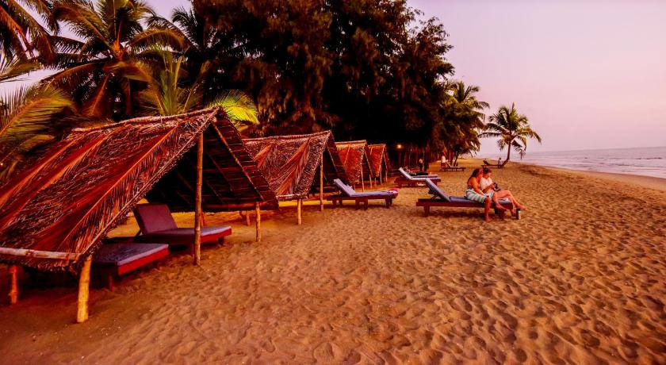

1. Vadakkunnathan Temple
The beautiful Sri Vadakkunnathan Temple is one of the oldest temples in Kerela.
The architectural wonder is standing strong at the heart of Thrissur.
This glorious temple is an example of Kerela’s rich heritage culture.
Today it is standing tall and restored to its old glory.
The temple is made of wood and stone in a nine-acre walled patch of green.
The temple has also won the “Award Of Excellence” at the UNESCO Asia-Pacific Awards for Cultural Heritage Conservation.
A walk through the calm and composed surrounds of the temple will treat you to a mix of architectural beauty, heritage, culture and history.
The temple is also renowned across the world for its Festive celebration.
Millions of followers and devotees gather every year to experience the famous "Thrissur Pooram" at the temple which also involves
a spectacular display of fireworks.
This majestic structure in the centre of city life has many a story to recount
Festivals At Sri Vadakkunnathan Temple
Maha ShivaratriMaha Shivaratri, is one of the main festivals celebrated with a lot of splendour at the temple. One lakh lamps light up the temple on this day. called as “Lakshadeepam” it is a significant offering here. The scene is so mesmerising that it deserves a visit.
Aanayoottu
Aanayoottu, or simply known as the feeding of elephants, is another major festival observed at Sri Vadakkunnathan Temple. On this festive day, the elephants are lined-up in a single row and fed by thousands of people ready with offerings like Sugarcane, Rice, Ghee, Coconut, Jaggery. Ayurvedic medicines are also added in the special food for the elephants.
Thrissur Pooram
The festival of colours – Thrissur Pooram is celebrated on the grounds of the Sri Vadakkunnathan temple, the Thekkinkadu Maidanam by mainly the other two temples. Vadakkunnathan witnesses this festival which attracts large masses of devotees and spectators worldwide.
Dress code At Sri Vadakkunnathan Temple
There is a strict dress code for entering the temple:
Men can only wear Mundu & Veshti, and boys can wear shorts.
Women can wear Saris, long skirts & Salwar Kameez.
Entry Rules At Sri Vadakkunnathan Temple
Only Hindus can enter the temple.
Children below one year are not be allowed inside the temple.
2.Basilica of Our Lady of Dolours
Dolours Basilica, known as Puthen Pally, has the distinction of being the biggest church in India with a tower, said to be third tallest in Asia. It has an area of 25,000 sq. ft., and is 261 ft. tall. It is adjacent to the Martha Marian church. Construction of the church in the Gothic style, that began in1929, was completed after 11 years. As many as 30,000 people can be accommodated in the church at a time. Other than the main altar, the church has five small altars. The Bible Tower with murals that depict various phases of Christ’s life is a unique feature. The bell tower has eight bells imported from Germany. The Feast of St. Mary, which falls in September, is the main event of the year. This is the most famous Marian pilgrim centre in Thrissur. Adding to the lush green beauty of Thrissur is this towering church of Basilica of Our Lady of Dolours. Adored as the white gemstone of the city, it counts as one of the places to visit in Thrissur. It is a haven for peace and tranquillity. For those seeking peace, you would find it right here in the church with its alluring architecture and quaint vibe.

3.Vilangan Hills
Hiking to the top of Vilangan Kunnu, a scintillating beauty, will steal your soul for sure! It is also one of the most desired hangouts in Thrissur district.
Vilangan Kunnu, popularly known as the ‘Oxygen Jar’ of Thrissur, is replete with lush greenery and innumerable flora and fauna. The place now offers an array of new facilities, including fun rides for kids as well.
This serene hillock, with more than 13 exciting rides, including pedal boat pool and wagon wheel, awaits you. One of the most interesting things here is the 16D theatre. It has seats that revolve 180 degrees. You can enjoy the waterfalls, feel the snow, and even inhale the fragrances, without leaving your seat.
The District Tourism Promotion Council (DTPC), Thrissur, is also planning to introduce dancing cars here. They have already made an 'Asokavanam' in association with the State Medicinal Plants Board, The Vilangan Trekkers’ Club and the Asokavana Samiti.
An 800-meter walkway lined with huge trees on both sides is also an added attraction.
The park is differently-abled friendly.
The hillock gifts you with stunning panoramic glimpses of the lush green surroundings, and a bird’s eye view of Thrissur district. To make these scenes clear and truly memorable, four viewpoints have been set up on the premises.
The Vilangan Kunnu area is a plastic-free zone. Use of plastic bottles and objects is prohibited here.
Kunnu is a perfect place to spend an evening with your friends and families. You can watch the overwhelming beauty of twilight and enjoy the calm of the cool breeze that whirls through the swaying greens.
The rides in the park are suitable for kids up to 7 years.
The tickets charges are Rs 30, Rs 50 and Rs 100.

4.Athirapally Waterfalls
As you walk down the stone slabs that lead to the base of the Athirappilly waterfalls, a mysterious serenity overcomes you. It is Kerala's most famous and largest waterfall at over 80 ft high. The sight of the water crashing onto the ground leaves you with a sense of wonder at the sheer power and magnificence of nature. Located around 63 km from Thrissur district, it is a perennial picnic spot for people in the area and beyond. Its surrounding greenery is perfect for walks and picnics with loved ones. Lying at the entrance to the Sholayar forest ranges, it is a part of the Chalakudy River which calls the Western Ghats its home.
Barely 5 km away is another family favourite, Vazhachal Waterfalls. These waterfalls became famous for not just their view but the endemic species found in the surrounding dense forests. Researchers have found four endangered species of the Hornbill here, the only place they thrive in the entire Western Ghats. Ornithologists attach great significance to this location and bird watchers can come across many rare and vibrant species in these parts.
Getting there
Nearest railway station: Chalakudy, about 30 km awayNearest airport: Cochin International Airport, about 53 km from Thrissur 
5.Nattika Beach
A tranquil beach in Thrissur, Nattika Beach, has a very unique claim to fame. Home to a typical fishermen’s village with longstanding traditions and simple inhabitants, its celebrity status was cemented after becoming the location where the Malayalam cult classic movie, Chemeen, was shot. It offers a number of attractions such as backwater cruises, country boat rides, elephant rides and cultural performances for the visitors. Film buffs and tourists alike will find much to admire about this pristine beach. Luxury Ayurveda Resort located on the shores of the beautiful Nattika Beach, Thrissur, South India. The expansive resort gardens along with a pristine beach and well laid out Villas result in the perfect environment for your Ayurveda and Yoga experience. Most of all it is our team at Nattika that ensures your complete rejuvenation by providing a traditional Ayurvedic treatment with the utmost personalized care. The Nattika Beach Ayurveda Resort is located on the serene Nattika Beach. It is only 67 Kilometres away from the Cochin International Airport which is about a pleasant 90 minute drive.
Getting there
Nearest railway station: Thrissur, about 30 kmNearest airport: Cochin International Airport, about 55 km